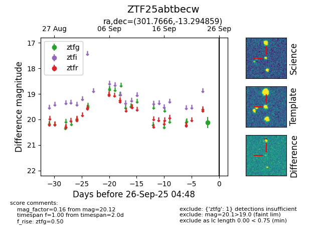

FINK: ZTF25abtbecw
Lasair: ZTF25abtbecw
ALeRCE: ZTF25abtbecw
ZTF25abtbecw (ztf,fink)
equatorial (ra, dec) = (301.7666,-13.29486)
galactic (l, b) = (29.1495,-22.67589)

last ztfg=20.12
1 ztfg detections